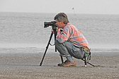
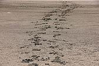
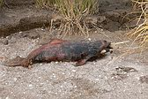
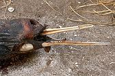
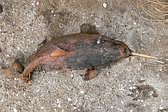
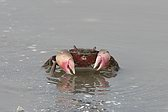
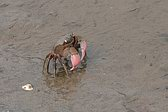
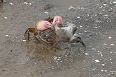
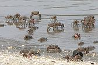
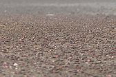

{kind=link}
{kind=link}
{kind=link}
{kind=link}
{kind=link}
{kind=link}
{kind=link}
{kind=link}
{kind=link}
FOTOS DE FAUNA / WIDLIFE PHOTOS
AVES - BIRDS
NON PASSERIFORMES
FALCONIFORMES
Chimango
- Chimango Caracara - Milvago chimango

CHARADRIIFORMES
Chorlo ártico - Grey
Plover (Black-bellied Plover)
- Pluvialis squatarola


Chorlito
Doble Collar - Two-banded
Plover- Charadrius
falklandicus


Chorlito
Pecho Canela - Rufous-chested Plover (Dotterel)
- Charadrius
(Zonibyx) modestus

Becasa de Mar
- Hudsonian Godwit
- Limosa haemastica


Vuelvepiedras
- Ruddy Turnstone - Arenaria
interpres


Playero Rojizo
- Red Knot
- Calidris canutus


Para acercarme a los Playeros Rojizos utilicé trípode, banquito
y 3/4 de hora, dejando en la playa una curiosa huella. ¡Ahí estoy!
To close in on the Red Knots I used a tripod, a small
stool and the better part of an hour, leaving behind a curious trail. There
I am!
{kind=link}
|
 Foto por / by: Gabriel Battaglia |
 Huella - Trail |
{kind=link}
{kind=link}
Playerito Rabadilla
Blanca - White-rumped Sandpiper
-
Calidris
fuscicollis


Gaviota
Cocinera - Kelp Gull
- Larus dominicanus


Gaviota
Cangrejera - Olrog's Gull
- Larus atlanticus


Gaviotín
Chico Común - Yellow-billed Tern
- Sterna superciliaris

Gaviotín
Lagunero - Snowy-crowned Tern - Sterna
trudeaui


Gaviotín
Golondrina - Common Tern
- Sterna hirundo

Gaviotín
Pico Amarillo - Cayenne
Tern - Sterna [Thalasseus] sandvicencis eurygnatha


Gaviotín
Real - Royal Tern - Sterna [Thalasseus]
maxima


Rayador
- Black Skimmer - Rynchops niger


PASSERIFORMES
Espartillero Enano - Bay-capped Wren-Spinetail - Spartonoica maluroides


{kind=link}
Curutié Ocráceo - Sulphur-bearded Spinetail - Cranioleuca suphurifera


EMBERIZIDAE
Chingolo - Rufous-collared Sparrow - Zonotrichia capensis

Verdón - Great Pampa-Finch - Embernagra platensis

CETACEA - PONTOPORIIDAE
Franciscana - La Plata river dolphin - Pontoporia blainvillei
Ejemplar hallado muerto en la playa. Mueren atrapadas en las redes de los botes de pesca que vimos en el estuario.
Found dead on the beach. They become trapped in fishing nets of the boats we saw out in the estuary.
{kind=link}

{kind=link}

{kind=link}

ARTHROPODA - CRUSTACEA - BRACHYURA- VARUNIDAE
Cangrejo Granuloso - Southwestern Atlantic estuarine crab - Chasmagnathus granulatus
{kind=link}

{kind=link}

{kind=link}

{kind=link}

{kind=link}

Portal del sitio: www.fotosaves.com.ar
Main page of this site: www.fotosaves.com.ar